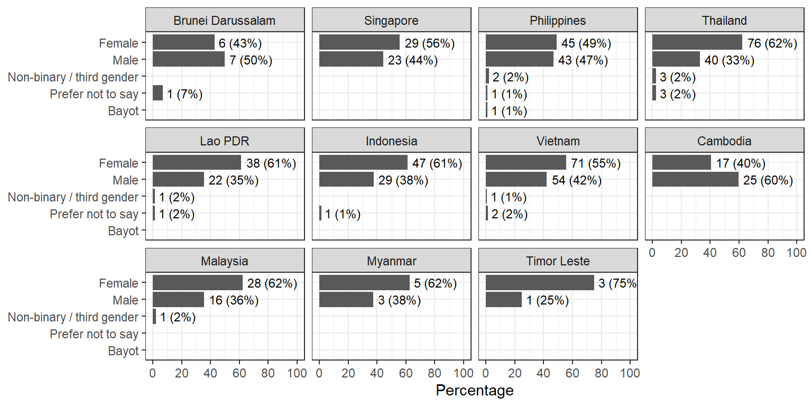
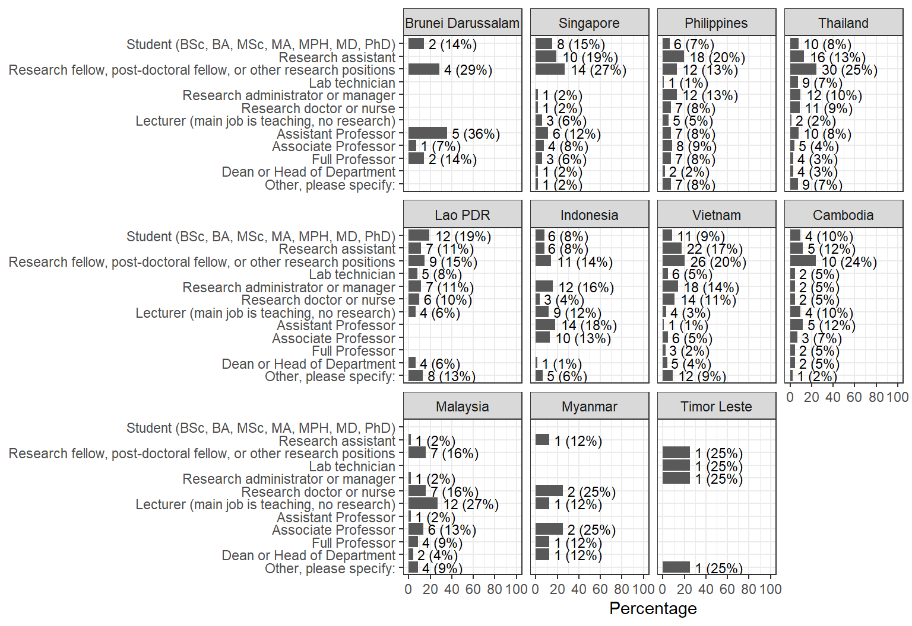
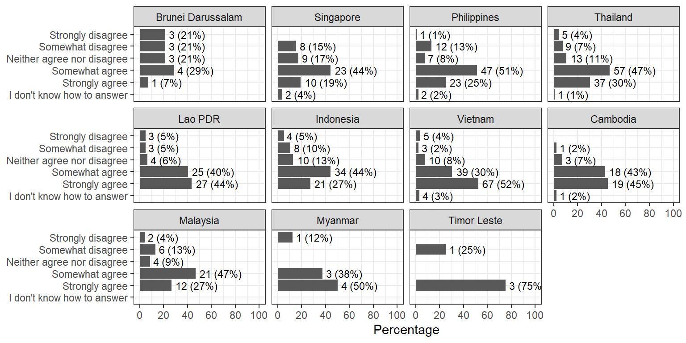
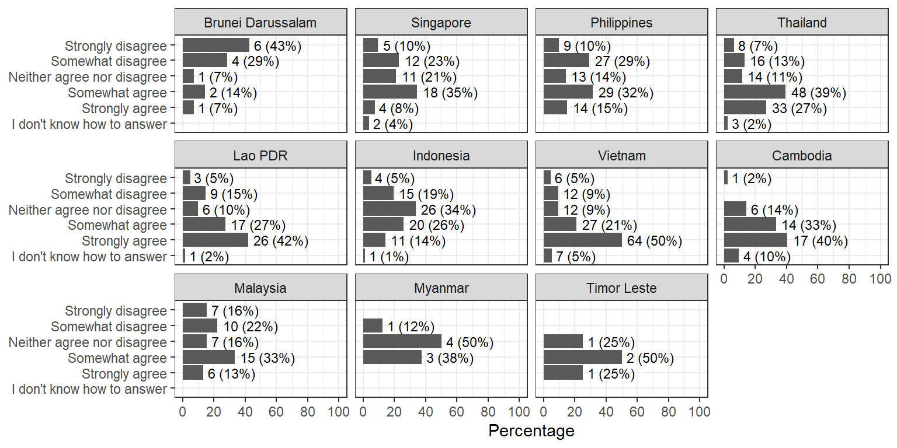
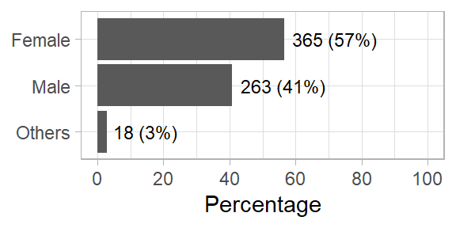
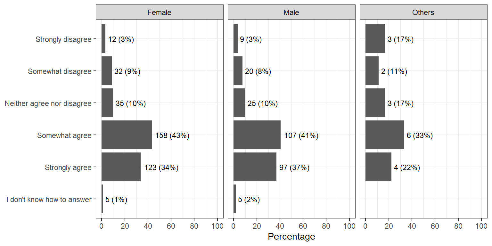
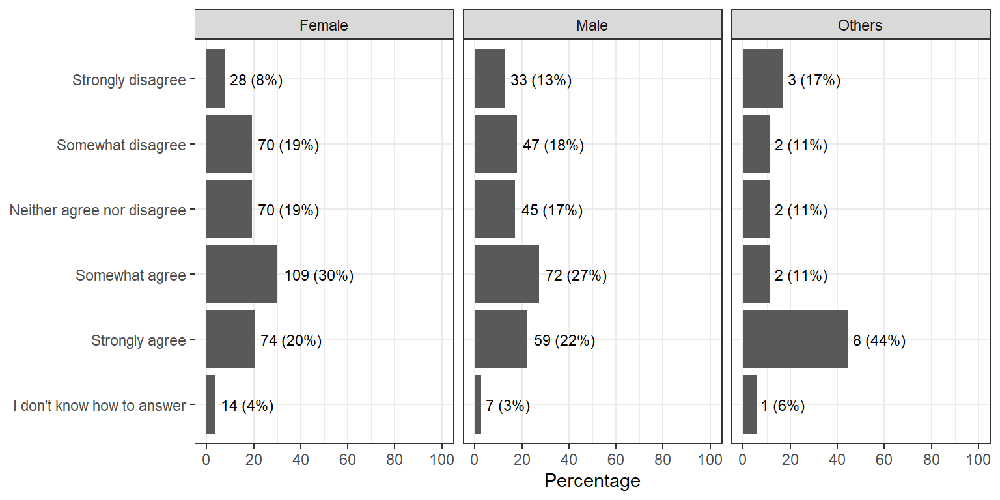
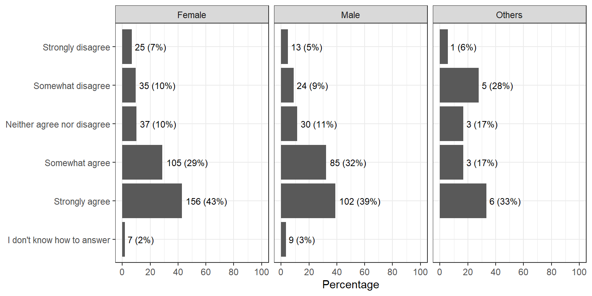
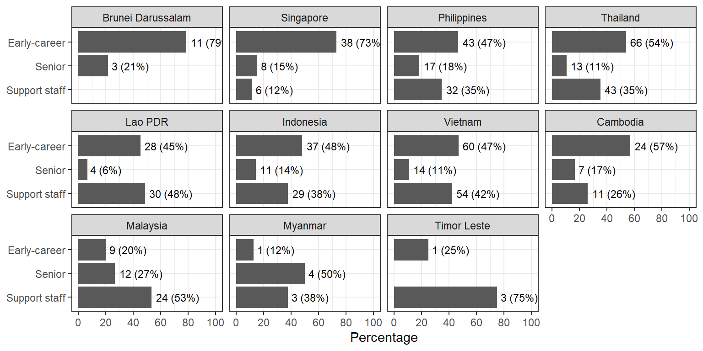
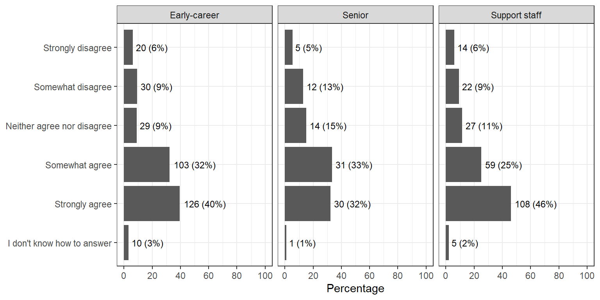

Draft
Gender
Years of experience
Organization
Job

| Characteristic | N = 6461 |
|---|---|
| Position at work | |
| Student (BSc, BA, MSc, MA, MPH, MD, PhD) | 59 (9.1%) |
| Research assistant | 86 (13.3%) |
| Research fellow, post-doctoral fellow, or other research positions | 124 (19.2%) |
| Lab technician | 24 (3.7%) |
| Research administrator or manager | 66 (10.2%) |
| Research doctor or nurse | 53 (8.2%) |
| Lecturer (main job is teaching, no research) | 44 (6.8%) |
| Assistant Professor | 49 (7.6%) |
| Associate Professor | 45 (7.0%) |
| Full Professor | 26 (4.0%) |
| Dean or Head of Department | 22 (3.4%) |
| Other, please specify: | 48 (7.4%) |
| 1 n (%) | |
The “Others” that weren’t be grouped
[1] "Administrative"
[2] "public health specialist"
[3] "Lecturer"
[4] "Bác sỹ y học dự phòng"
[5] "Nhân viên"
[6] "Bác sĩ"
[7] "kế toán viên"
[8] "Policy making"
[9] "Hỗ trợ kỹ thuật và bảo trì thiết bị phòng xét nghiệm"
[10] "Chuyên viên"
[11] NA
[12] "University physician"
[13] "Consultant"
[14] "Điều phối viên kết nối chính sách"
[15] "Staff"
[16] "Petugas lapangan"
[17] "Marketing"
[18] "Practising pharmacist involved in some clinical research work"
[19] "M&E"
[20] "Senior Lecturer who is required to conduct research as part of key performance."
[21] "Lecturer and involved actively in research"
[22] "allied health professional"
[23] "គ្រូបង្រៀនពេញុម៉ោង"
[24] "อาจารย์ (งานหลักคือทำวิจัย +สอน)"
[25] "research pharmacist"
[26] "ผู้ประสานงานการวิจัย"
[27] "Research veterinarian"
[28] "Operations"
[29] "ผู้ดูแลนักศึกษา"
[30] "เจ้าหน้าที่การเงิน"
[31] "Staff"
[32] "Giảng viên và là nhà nghiên cứu"
[33] NA
[34] "Comms"
[35] "Programmer"
[36] NA
[37] "Finance admin"
[38] "Prof.emeritus"
[39] "Lab analyst"
[40] "Staff"
[41] "Nghiên cứu độc lập"
[42] "Dosen penuh dan peniliti penuh"
[43] "Administrator"
[44] "operations team"
[45] "Senior High Instructor"
[46] "COO"
[47] "Business owner"
[48] "Instructor with research function" Main questions by country
I think research culture is evolving for the better

There is equity in decision-making and giving credit for research within my organisation
International research funders and/or foreign researchers dominate the research priorities of my country
I am satisfied with the way research performance is assessed my organization e.g., academic publications, or obtaining a research grant

At my organization, there is collaboration rather than competition between researchers
Do you think career progression (for instance, to senior positions) is harder for certain groups of researchers, e.g., women, early career researchers?
Noted that this question may be incorrect for participants in Vietnamese, Lao PDR… due to an error in translation that I’ve reported to Nina
The “Others” that weren’t be grouped
[1] "Male, minorities."
[2] "Socioeconomic status, university a person came from"
[3] "Without teaching certification."
[4] "No lineage/relationship with the high-level leaders in the institution"
[5] "my knowledge in this area is limited"
[6] "Malaysia and Brunei: Non-Muslim (I wouldn't specify this as an Ethnic minority but a religious minority)"
[7] "no"
[8] "Part-timers"
[9] "low skill to written resseacrh topic"
[10] "Medical Personnel"
[11] "Lower grade researchers"
[12] "Those who are not favoured by the top management"
[13] "Bureaucratic issue"
[14] "No discrimination in my country,people who work hard can get good positions."
[15] "ឲ្យតម្លៃទៅលើសញ្ញាបត្រជាជាងសមត្ថភាព"
[16] "English barrier"
[17] "Non-English proficient"
[18] "ไม่มีผลงานวิจัยที่น่าสนใจ/เป็นประโยชน์ได้ตีพิมพ์"
[19] "Low socio-economic statuses"
[20] "Lack of soft skills"
[21] "Generations coming after boomers"
[22] "PhD holder has less opportunities as the job market is not available for that level of education. Only few job spaces are available in Asia for PhD holders."
[23] "Area studies"
[24] "Religious minorities, people from lower SES"
[25] "Researchers not doing \"hot topics\"" Main questions by gender
Here I group “Non-binary/third gender”, “Prefer not to say” and “Bayot” into “Others”.

I think research culture is evolving for the better

There is equity in decision-making and giving credit for research within my organisation
International research funders and/or foreign researchers dominate the research priorities of my country

I am satisfied with the way research performance is assessed my organization e.g., academic publications, or obtaining a research grant
At my organization, there is collaboration rather than competition between researchers

Do you think career progression (for instance, to senior positions) is harder for certain groups of researchers, e.g., women, early career researchers?
Main questions by career stage
I grouped:
- “Student (BSc, BA, MSc, MA, MPH, MD, PhD)”, “Research assistant”, “Research fellow, post-doctoral fellow, or other research positions”, “Assistant Professor” as “Early-career”
- “Associate Professor”, “Full Professor”, “Dean or Head of Department” as “Senior”
- The rest (“Lab technician”, “Research administrator or manager”, “Research doctor or nurse”, “Lecturer (main job is teaching, no research)”, “Other, please specify:”) as “Support staff”
By country

I think research culture is evolving for the better
There is equity in decision-making and giving credit for research within my organisation

International research funders and/or foreign researchers dominate the research priorities of my country
I am satisfied with the way research performance is assessed my organization e.g., academic publications, or obtaining a research grant
At my organization, there is collaboration rather than competition between researchers

Do you think career progression (for instance, to senior positions) is harder for certain groups of researchers, e.g., women, early career researchers?